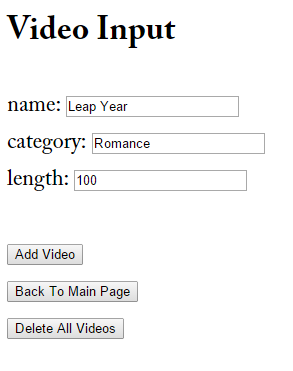
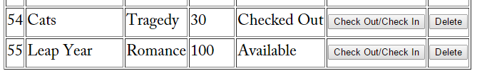

We now turn to inserting capability with PDO. A capability that PDO offers is binding parameters, which allows you the freedom of not having to keep track of the parameter order.
Here you can see the function that was created using PDO that will insert a video into the database, function insert_video($name, $category, $length, $rented.
The variables,$name, $category, $length, $rented, are the elements that we want to define our database inventory items, which in this case is videos.
The variable,$data is initialized to an array of the variables for our database insertion, followed by the initialization of the variable $sqlString
to the prepared statment for the PDO. The next step is the variable $sql being set to the object (instance of the database class)$this, which takes in
$sqlString. Elements that we are needing for our database insert are taken in at the array portion and then put in at the :name, :category, :length, :rented
portion of the $sqlString. Lastly, $sql accesses execute which takes in $data,previously initialzed to the array. (**Note: in reference materials
you may encounter the variables entitled $pdo etc. where we are using the chosen variable name$sql)
Again, the try/catch block enclosing the PDO insertion code is in case of an error and provides a message in case this is encountered.
Above is the MySQLi API version of the insertion code needed for our video database. You will notice there are no binding parameters or prepared statements in MySQLi, as there are in the PDO example.
Looking now at the html link for the database, we can see what the user end of adding video into the database.
By selecting the Add Video button, the video Leap Year is added to the video list as shown below.
Onward to the next section in which we will learn to update with PDO...
Toggle MenuOnward